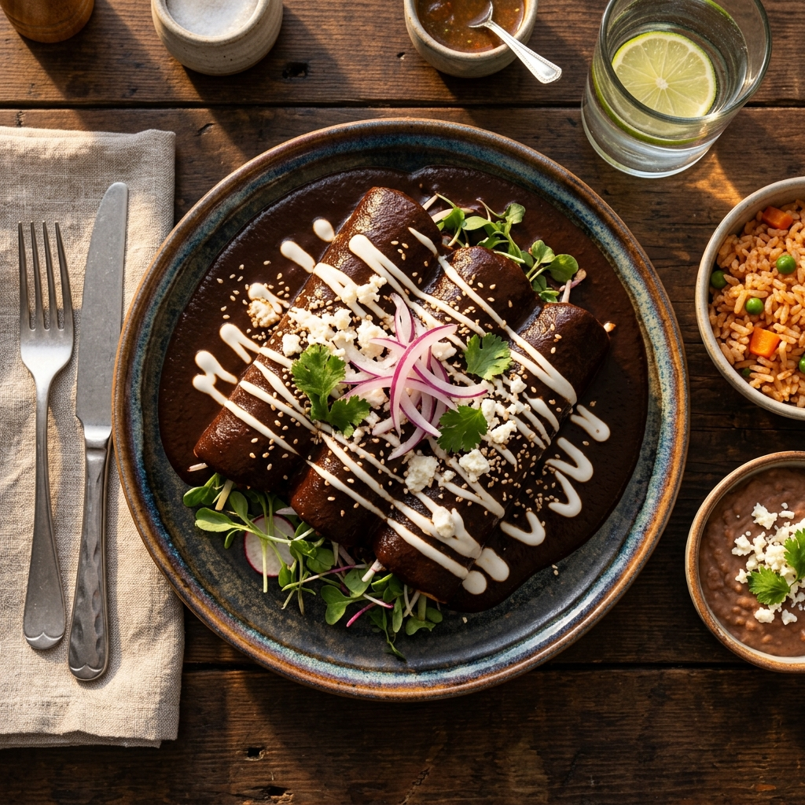
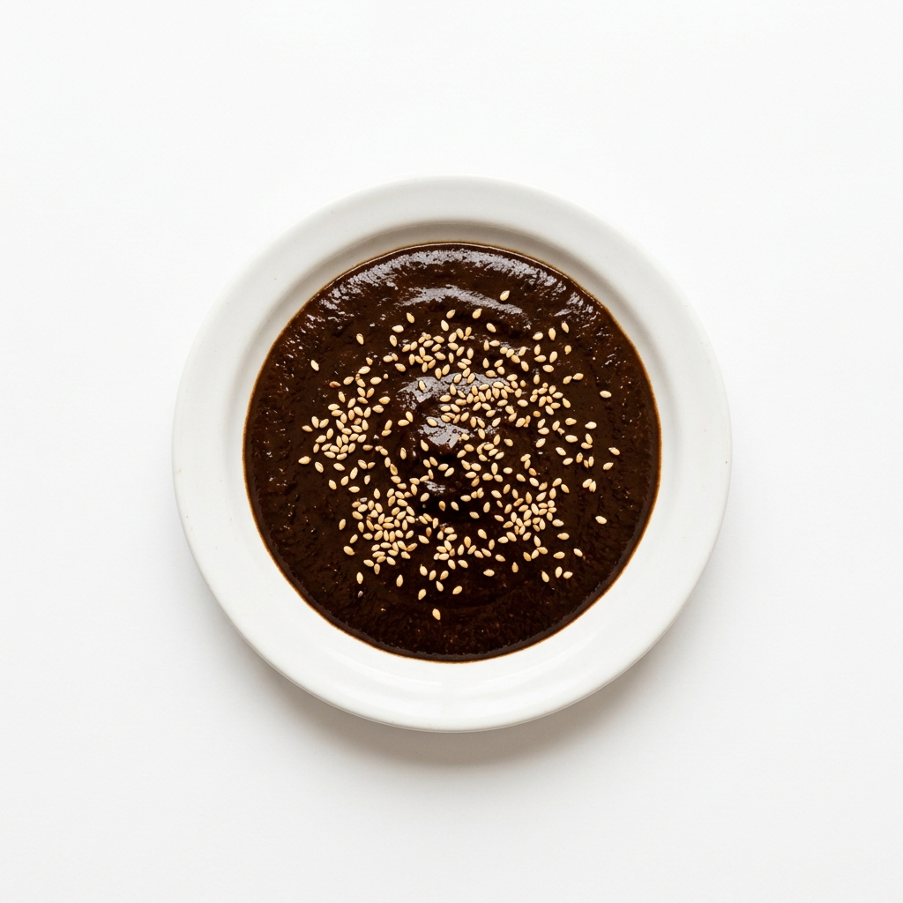
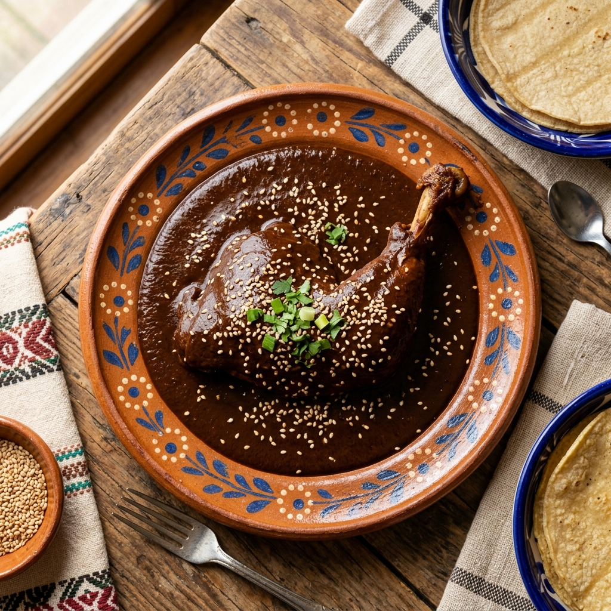
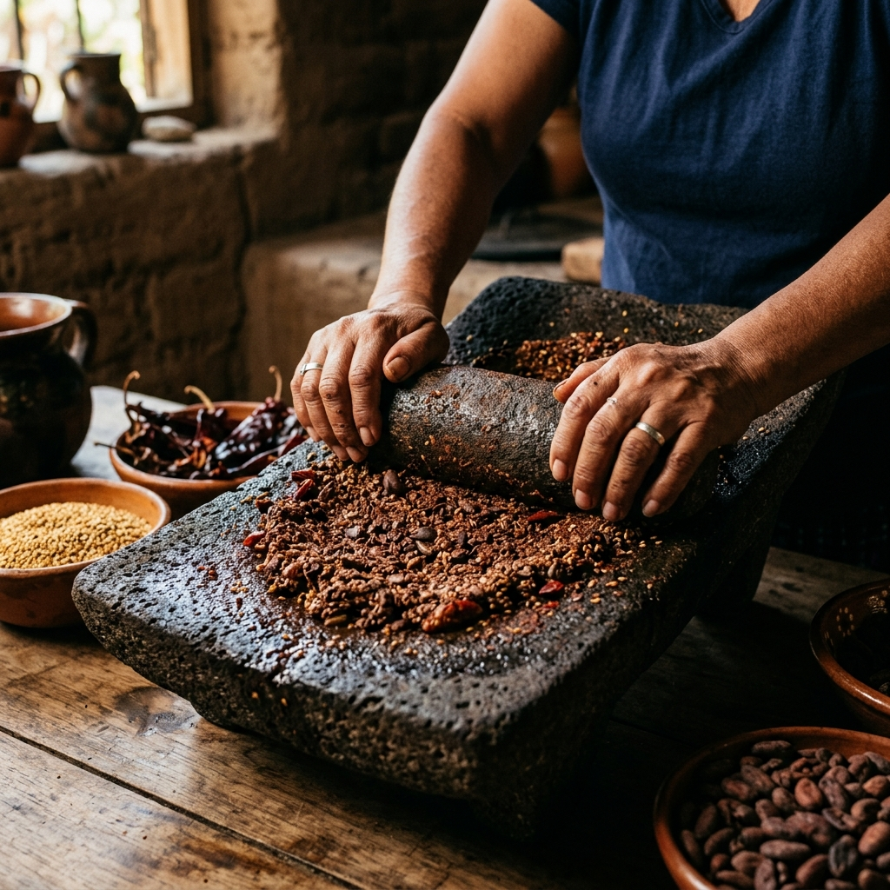
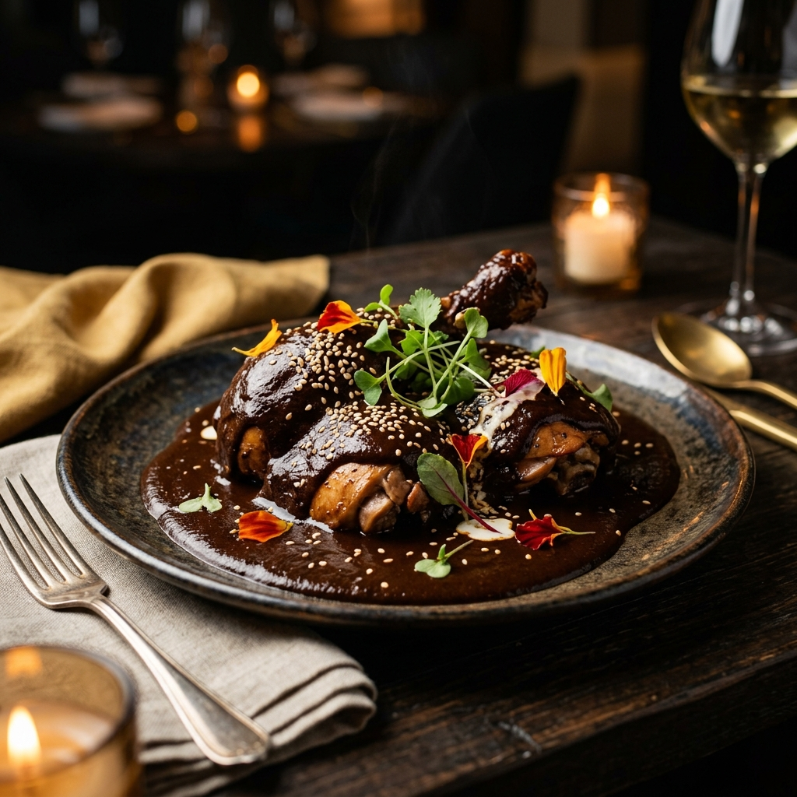

15 minMole artesanal en pasta
MOLE
POBLANO
100%
natural
natural


tan profundo
COMO
COMO
EL DE CASA
Mole El Refugio concentra chiles tostados, cacao, semillas y especias molidas con paciencia para que cada cucharada sepa a cocina lenta, no a fabrica.

Por que Mole El Refugio?
INCREIBLEMENTE SABROSO
Capas de chile, cacao, ajonjoli, especias y frutos secos crean una salsa oscura, aromatica y tersa. Sabe intenso, abraza la tortilla y convierte una comida simple en plato de fiesta.
TRADICION CON CUERPO
Cada lote se prepara con ingredientes reconocibles y sin atajos innecesarios: sin harinas de relleno, sin conservadores pesados y sin colorantes artificiales.
INGREDIENTES DE CALIDAD
Chile mulato, ancho y pasilla. Cacao de mesa, ajonjoli, almendras, pasas, platano macho, canela y especias tostadas al punto exacto.
Cacao
Chiles
Semillas
Chiles
Semillas
Comparado con un mole industrial comun, Mole El Refugio presume:
0%Conservadores
100%Sabor de metate
3Pasos para servir
RECETAS
LLENAS DE SABOR

30 minPollo con mole
VER RECETAEncuentra ayuda
FAQ
Como preparo el mole?
Diluye la pasta poco a poco con caldo caliente, mezcla a fuego bajo y ajusta la textura hasta que quede brillante y espesa.
Contiene conservadores?
No. La receta esta pensada para destacar ingredientes naturales, chiles tostados y especias reales.